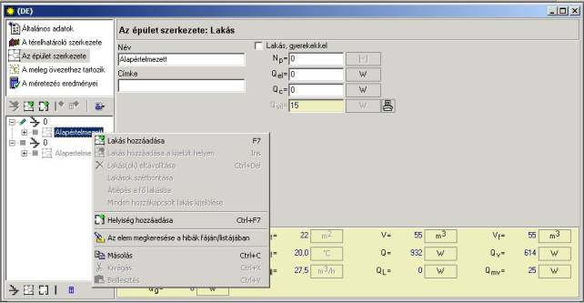
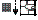

4.5.2. Lakások leírása
A szinteknek az épületstruktúrába való beillesztése és adatainak kitöltése után a felhasználónak lehetõsége van a lakás beillesztésére. A lakást azon helyiségcsoport képezi, amelynek a ventillációs levegõmérlege kiszámításra kerül, valamint amelyen belül deklarálható más helyiségekkel való fûtési megosztása, mindkét irányban.
Az emelet szintjében tartózkodva, és a "Lakás hozzáadása" meghívásával a felbukkanó menübõl, vagy a Ctr+F7 billentyûkombináció, vagy a "Menü kibontása" gomb segítségével, a felhasználó lakást helyez az épületstruktúrába. Lakás deklarálása szintén lehetséges az épület fastruktúrájában, ikon segítségével.
4.5.2.1. Lakások adatai, és eredményei
Az épületstruktúrában található egy "Alapértelmezettként" elnevezett hely, amelyben meg kell adni mindazon helyiségeket, amelyek nem illeszkednek a lakásba. Ez az olyan helyiségekre vonatkozik, mint a elõszoba, lépcsõház stb., amelyekre a szellõztetõ levegõ mérlegének meghatározása külön történik.

A lakások leírása a szint leírásához hasonlóan kerül meghívásra azaz az épületstruktúra fájában a kiválasztott helyiségre történõ kattintással. A lakás adatszerkesztési ablakában megadható annak neve, megjegyzés a névhez a "Leírás" mezõben, valamint a szezonális energiaigény számításának esetében megadhatóak a fõzésbõl, az elektromos készülékekbõl, a világításból és az adott lakásban tartózkodó lakók számából eredõ belsõ hõnyereségre vonatkozó adatok.
A program alapértelmezésben a személyek számát a lakásban 3-ban állapítja meg. Ha a lakásban gyerekek is vannak, akkor ki kell jelölni a „Lakás gyerekekkel” mezõt.
A belsõ hõnyereségre vonatkozó mezõk a következõk:
Qc/Flc – a fõzésbõl származó nyereségek egy lakásra esõ része
Az adatok a program alapértelmezett, és az "Általános adatokban" megadott adataiból kerülnek másolásra. A felhasználó ezt az értéket tetszõlegesen szerkesztheti, a valódi hõnyereségektõl függõen.
Qel/Fel - az elektromos eszközökbõl származó nyereségek egy lakásra esõ része
Az "Általános adatokból" vett, alapértelmezett érték, minden lakásnál függetlenül módosítható.
Qvil / Fvil – az egy lakásra esõ hõnyereség a világításból
A mutató
értékét a program automatikusan írja be lakás alapfelülete alapján. A
felhasználó kézzel is megadhatja. Az üzemmódok közötti átkapcsolás: az  ikon az
automatikus számításokhoz, valamint az
ikon az
automatikus számításokhoz, valamint az  ikon a
felhasználó által megadott méretezéshez.
ikon a
felhasználó által megadott méretezéshez.
Np. – a lakásban tartózkodók átlagos száma
A személyek számának megadásával kiszámítható a lakásban tartózkodókból eredõ hõnyereség, az "Általános adatokban" meghatározott személyre bontott hõnyereség felhasználásával.
A belsõ eredetû hõnyereség megadásának mezõi csak a szezonális energiaigény számításoknál jelennek meg.
A lakás szerkesztõ ablakának alsó részén találhatóak a lakásra vonatkozó számítási eredmények:
- A – a lakás felülete,
- At – a lakás fûtött felülete,
- V – a lakás köbtartalma,
- Vf – a lakás fûtött köbtartalma,
- tf/Ff – a lakásban levõ fûtött helyiségek átlaghõmérséklete
- Q/F – teljes hõveszteség
- Qv/Fv – a lakás hõvezetésbõl származó hõvesztesége
- Qszelt/Fszel – ventillációból eredõ hõveszteség
- Vszel – ventillációs levegõ áramlása
- QL/FL – a lakásban tartózkodók okozta hõnyereség,
- Qmv/Fmv – a lakásban használt melegvíz felhasználásából származó hõnyereség - normatív, állandó értéke,
- Qg/Fg – teljes hõnyereség – a lakásra vonatkoztatott összes hõnyereség
4.5.2.2. Mûveletek a lakásokkal
Az épületstruktúra fájában hozzáférhetõ tevékenységek – lakások szintje:
Az épületstruktúra fájában kijelölve a lakást a felbukkanó menübõl (az egér jobb gombját megnyomva) a következõ tevékenységeket lehet meghívni:
- Lakás hozzáadása F7 – új lakás megadása az aktuálisan kijelölt szinten. A lakás az adott szinten, a lista végére kerül beillesztésre.
- Lakás hozzáadása a kijelölt helyen Ins – a kijelölt mellé illeszt be új lakást. Azon felhasználó számára hasznos ez az utasítás, aki a saját maga választotta rendben adja meg a lakásokat, vagy az épületstruktúrában a maga választotta helyre szeretné beilleszteni a lakást.
- Lakás(ok) törlése, Ctrl+Del – a kijelölt lakás(ok) eltávolítását eredményezi, az ide betett helyiségekkel együtt.
- Lakások összeillesztése – a menü a több szintet képezõ lakásokra vonatkozik. A több szinten elhelyezkedõ lakások egyesítéséhez azokat ki kell jelölni a Ctrl gomb nyomva tartása mellett. Az ily módon kijelölt lakásokra ez a menü érvényes, és alkalmazásával a kijelölt lakások egyesítésre kerülnek, valamint a felhasználónak lehetõsége nyílik a megjelenõ "Fõ lakás megadása" ablakban kiválasztani a fõ lakást. Ez a „Lakások összekapcsolása” utasítás az épület térstruktúrájának bemutatására szolgál – szerkezetileg és a mérlegben tükrözve az egy épületszintet túllépõ térbeli folyamatosságukat.
- Lakások illesztésének megszüntetése – hatására a többszintû lakás külön egységekre osztódik. A menü a hozzákapcsolt lakásra érvényes
- Fõ lakásra való váltás – hatására a fõ lakásra váltunk, amely a felhasználó által a több szinten elhelyezkedõ, kijelölt lakás közül kerül kiválasztásra. A fõ lakás hõnyereségére vonatkozó adatok megadásának hatására ezen adatok az egész lakásra vonatkoznak. A fõ lakás az épületstruktúra fájában az ikonnal

van megkülönböztetve. A menü a többszintû lakás összeállításába tartozó, de nem fõ lakásként szereplõkre aktív.- Összes hozzákapcsolt lakás keresése – hatására minden kapcsolt lakás megjelenítésre kerül. A menü a kijelölt fõ lakásra aktív.
- Helyiség hozzáadása Ctrl+F7 – az aktuálisan kijelölt lakáshoz való új helyiség hozzáadása.
- Elem keresése az hibák listájában/fájában – megkeresi a kijelölt elemet pl. szintet, lakást a megjelenített hibalistában. Ily módon a felhasználó megtudhatja, hogy mely adatok nem kerültek megadásra, vagy nem lettek helyesen megadva.
- Másolás (Ctrl+C) – lehetõséget biztosit a kijelölt lakás másolására a szerkesztés alatt álló terv épületstruktúráján belül, vagy más tervbe.
- Kivágás (Ctrl+X) – lehetõséget biztosit a kijelölt lakás kivágására.
- Beillesztés (Ctrl+V) – lehetõséget biztosit a másolt, vagy kivágott lakás beillesztésére az ugyanazon, vagy más terv épületstruktúrájának kiválasztott helyére.
"Lakások összekapcsolása" menü ismertetése
Ha a felhasználó összetett módon szeretné bemutatni a hõveszteségére, a ventillációs levegõmérlegre, és a szezonális energiaellátásra vonatkozó számítási eredményeket a több, szomszédos szintet átfogó lakásoknál, akkor ezt a "Lakások összekapcsolása" menü meghívásával teheti meg. Ezzel többszintes ház deklarálására kerül sor. A "Lakások összekapcsolása" menü használata a Ctrl gomb nyomva tartása mellett a kiválasztott lakások kijelölésével lehetséges. A lakások összekapcsolása tükrözheti az épület struktúráját (amikor egy lakás több szintet foglal magába), vagy képezheti a lakások mérlegbeli összekapcsolását (pl. amikor a felhasználó arra kíváncsi, hogy egy lakáscsoportnál milyen összesített hõveszteség kerül megadásra). A lakások csoportjában egy lakás ki van emelve, "fõ lakás" néven. Ezen lakás reprezentációs szerepet tölt be, vagyis a benne megjelenítésre kerülõ számítások magukba foglalják az összes helyiséget, és a felhasználó csak ebben szerkesztheti a lakás adatait. Vagyis többek közt ebben szerepelnek a többszintes lakások összeállításába bekerülõ lakáscsoportokra vonatkozó hõveszteség számítási eredmények, valamint a szezonális energiaszükséglet.
Összegezve, a "Lakások összekapcsolása" menü szolgálhat az épület térbeli struktúrájának ábrázolására, vagy képezheti a mérlegképzési rendszer leírását.
Az összekapcsolt lakások területén belül hozzáférhetõ a "Helyiségek összekapcsolása" menü. A menü az olyan helyiségek beillesztésére szolgál, amelyeknek a magassága meghaladja egy emelet magasságát, pl. fûtött, magas hall egy egycsaládos házban, lépcsõház egy többlakásos házban. Lehetõvé teszi az épület térbeli folytonosságának az ábrázolását, és az összekapcsolt helyiségek közös hõmérsékleti és levegõ ventillációs mérlegének kiszámítását.
Összegezve, az összekapcsolt lakásokon belül helyiségek összekapcsolására is van lehetõség, amivel egy emelet magasságát meghaladó magasságú helyisége(ke)t illeszthetünk be.
! A "Helyiségek összekapcsolása" menü csak többszintes lakás esetében használható.